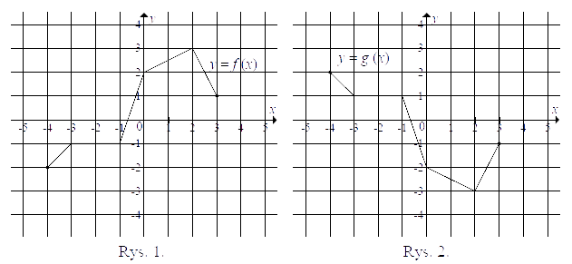
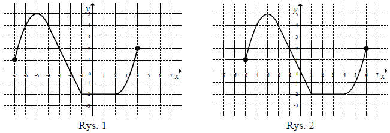

Jesteś tutaj: Matura
podstawowa - kurs - część 22 - zadania
Matura podstawowa - kurs - część 22 - zadania
Cały kurs na: ./matematyka-matura-podstawowa-kurs.html.
Na rysunku 1. jest przedstawiony wykres funkcji \(f\), a na rysunku 2. - wykres
funkcji \(g\).  Funkcja \(g\)
jest określona wzorem
A.\( g(x)=-f(x) \)
B.\( g(x)=f(-x) \)
C.\( g(x)=f(x)+4 \)
D.\( g(x)=f(x)-4 \)
A
Rysunek przedstawia wykres funkcji \(y = f(x)\).  Wskaż rysunek na którym jest
przedstawiony wykres funkcji \(y = f(x + 1)\).
Wskaż rysunek na którym jest
przedstawiony wykres funkcji \(y = f(x + 1)\). 
Wskaż rysunek na którym jest
przedstawiony wykres funkcji \(y = f(x + 1)\). D
Na rysunku 1. jest przedstawiony wykres funkcji \(y=f(x)\)  Funkcja przedstawiona na rysunku 2. określona jest wzorem
Funkcja przedstawiona na rysunku 2. określona jest wzorem
Funkcja przedstawiona na rysunku 2. określona jest wzorem A.\( y=f(x)+2 \)
B.\( y=f(x)-2 \)
C.\( y=f(x-2) \)
D.\( y=f(x+2) \)
B
Na rysunku 1 przedstawiony jest wykres funkcji \(y=f(x)\)
określonej dla \(x\in [-7, 4]\). 
Rysunek 2 przedstawia wykres funkcji
A.\( y=f(x+2) \)
B.\( y=f(x)-2 \)
C.\( y=f(x-2) \)
D.\( y=f(x)+2 \)
C
Funkcja \(g\) jest określona wzorem 
A.\( g(x)=f(x-1) \)
B.\( g(x)=f(x)-1 \)
C.\( g(x)=f(x+1) \)
D.\( g(x)=f(x)+1 \)
B
Wierzchołek paraboli będącej wykresem funkcji kwadratowej \(y = f (x)\) ma
współrzędne \((2, 2)\). Wówczas wierzchołek paraboli będącej wykresem funkcji \(g(x) = f(x + 2)\) ma
współrzędne
A.\( (4,2) \)
B.\( (0,2) \)
C.\( (2,0) \)
D.\( (2,4) \)
B
Gdy przesuniemy wykres funkcji \(f(x)=2x-3\) o \(2\)
jednostki w prawo i \(4\) jednostki w górę, to otrzymamy wykres funkcji opisanej wzorem
A.\( y=2(x-2)+4 \)
B.\( y=2(x-2)-4 \)
C.\( y=2(x-2)+1 \)
D.\( y=2(x+2)+4 \)
C